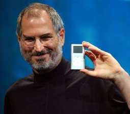

머리숱이 차츰 줄어들어 고민이다. 도대체 왜!? 내가 머리가 안좋은데 많이 써서 그런 건가, 야한 생각을 많이 해서인가 여러가지 생각이 들었다. 그러던 중 딜버트 만화에서 딜버트의 상사인 Pointy-haired Boss(PHB)를 보니 전형적인 대머리 아저씨인데 관료적이고 분위기 파악 안되고 부하를 몰아치는 캐릭터라는 게 눈에 들어왔다. 말하자면 머리 좋고 게으른 직장 상사와 머리 나쁘고 부지런한 직장 상사 중 후자가 대머리가 되는 경우가 많은 걸까?
그래서 알아보기로 했다. 세계 유명인의 머리 스타일과 업적 등. 머리가 좀 빠질 만한 나이대의 분들을 모셔봤다.
|  | 故 스티브 잡스 아저씨는 대단히 창의적인 업적을 이뤘지만 일하는 스타일은 완고하고 밀어붙이기식으로 유명하다. 사망할 때까지 일 밖에 몰랐던 분. |
| 빌 게이츠 아저씨는 대단히 머리가 좋고 기회를 잘 포착하는 스타일이다. 그에 대한 가장 큰 비판은 반 경쟁 구도를 조장하여 법적으로도 MS가 큰 제재를 받았다는 것이다. 하지만 MS 대표이사를 사직한 후 자선 사업으로 더 유명해지고 있다. | |
| 스티브 발머 아저씨는 현재 MS의 대표이사로 빌 게이츠 이상 머리가 좋은(좋았던?) 분이다. 80년에 30번째 직원으로 MS에 입사해서 주로 관리직을 맡아왔다. 2000년에 빌 게이츠에 이어 MS의 CEO가 된 이후 10여년간 MS의 매출은 $250억에서 $700억, 순이익은 $110억에서 $230억이 됐다고 한다. | |
| 래리 엘리슨은 Oracle의 창업자로 70년대부터 CEO로 활동하고 있다. 미디어에 사업 외적으로 자주 노출되지만(아이언맨에도 출연) 개인적인 스타일은 잘 모르겠다. 다만 Oracle의 사업 방식으로 보면 인수, 합병이 잦고 사업 분야 확장이 크면서도 몇 십년을 잘 유지하는 걸 보면 관리적인 CEO가 아닐까도 싶다. | |
 |
Linux, Git 등으로 유명한 리누스 토르발즈 아저씨다. 오픈소스 소프트웨어의 핵심 인물 중 한 사람으로 큰 회사에 참여하는 것 보다는 기술 자체를 즐기는 사람이다. |
| 세르게이 브린은 래리 페이지와 함께 Google을 만든 사람이다. 이 분 역시 어떤 성격인지는 알 수 없으나 Google의 행보로 볼 때 창의적이고 기술 지향적인 사람이 아닐까 한다. 참고로 래리 페이지와 두 사람은 1973년생 동갑이고 둘 다 대머리가 아니다. | |
| 연예인으로 유명한 브루스 윌리스 아저씨지만 요즘엔 사업도 많이 펼치고 있다. 다방면에 관심이 많고 수완도 좋은 듯 하다. 다만 연예인답게(?) 약간 돌출 행동을 하기도 한다. | |
| 현재 14대 달라이라마인 텐진 갸초는 격의가 없고 웃는 얼굴로 인상적이다. 속세와 내세를 향한 구도에 한쪽 발씩 걸친 듯한 느낌을 준다. | |
| 미국 중앙은행의 수장인 벤 버냉키 아저씨다. 공직에 오르기 전 경제학 교수였고 부시 정부에 이어 오바마 정부에서도 신임을 받고 있다. 언론과는 친하지 않아서 오해를 많이 사기도 했지만 원칙주의자고 중앙은행의 투명성을 지향한다. | |
| 네네, 시네이드 오코너 맞습니다. 좀 특이하지만 한창 때 대머리와 개성 넘치는 음악으로 유명했던 여자분이다. 대머리였을 때는 차고 강인한 느낌을 줬던 분. |
어떤가? 머리 스타일과 그 사람의 특징에 연관성이 있는가? PHB 스타일 머리라고 좁쌀 영감이나 단순 무식 직장 상사가 되는 건 아니지 않은가?
결국 중요한 건 그 사람의 재능을 잘 살려야 성공하는 것이고 머리 스타일은 상관이 없다. 머리가 벗어졌어도 멋진 사람들만 많은 듯…